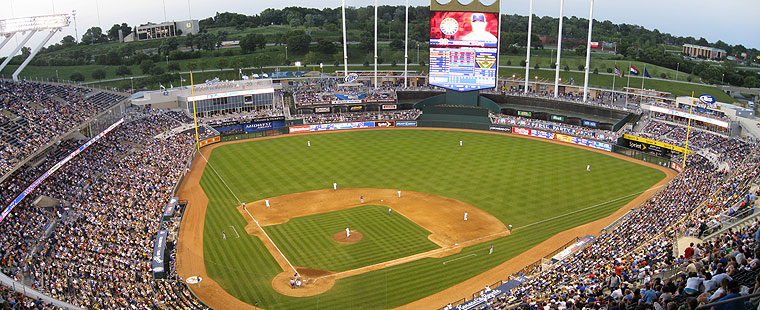
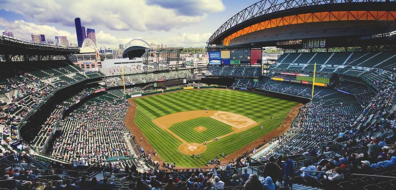
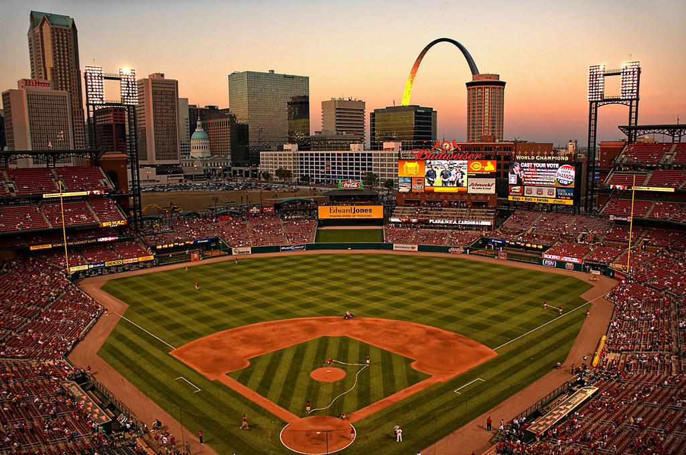

Kauffman Stadium is home to the Kansas City Royals. I've spent many days there during Kansas City Summers.
T-Mobile Park is home to the Seattle Mariners. I went to Seattle on vacation once, and they happened to be playing the Royals during the vacation so my family and I went to a game. The stadium was quite nice.
Busch Stadium is Home to the Saint Louis Cardinals. I've gone to a couple of games there while visiting friends and family. I really enjoy how the skyline of the city is visible out above center field.
